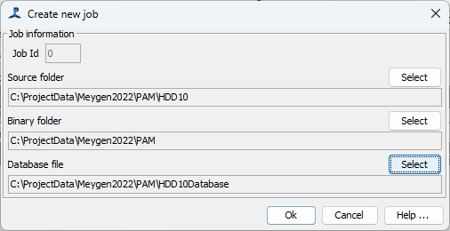
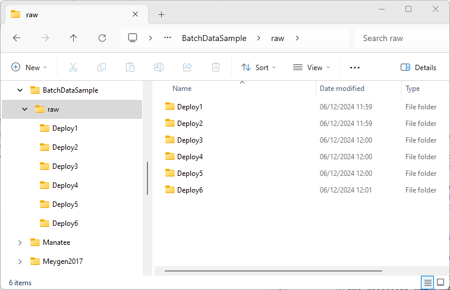

Creating Jobs
Before you start processing, you need to set up one or more “jobs”. Each job requires the name of a folder containing raw sound input data, the name of an output folder for binary data and the name of a database.
The information about each job is stored in a database table called Batch_processing.
Setting up single jobs
To set up a single batch job, click on “Create Job” and a dialog will appear where you can enter the folder for source sound files, the name of the output binary folder and the name of the output database. The dialog differs slightly depending on whether you are setting up normal mode jobs or offline tasks. When setting up normal jobs, you start with sound files and tell the batch processor where to create the output binary files and database, whereas when you set up offline tasks, you’re starting with an existing PAMGuard database which should already ‘know’ where the binary files are.
|  |  |
|---|---|
| Dialog for creating jobs in normal mode | Dialog for creating jobs for offline tasks |
Setting up multiple jobs (normal mode)
If all of your raw data are in multiple folders on the same hard drive, then it’s easy to set up multiple jobs at once. Click the “Create Set” button and select the folder that contains sub folders for each set of data. The files within the sub folders will be searched for sound files to see how many jobs to create. Then select a root folder for databases and a root folder for binary file output. The jobs will then be automatically created with output binary folder names and database names based on the names of the sub folders containing the raw data. For example, if you had data from six deployments named “Deploy1” … “Deploy6” all in a folder D:/BatchDataSample/raw as shown in the figure below, then simply set the source folder to D:/BatchDataSample/raw and the program will find the six sub folders.
 
Then select output folders for the binary data and for the databases, which need not be in the same root, but could be anywhere else on your system (e.g. the raw data may be on a server or external hard drive but you write the outputs to your local C drive)
Once you close the dialog, all six jobs will be created and will appear in the jobs table.


Note that nothing will appear yet in the selected output folder. Binary output folders and databases will be created when each job runs. After all six jobs were complete the output folder looked like this, containing six folders of binary data and six databases:

Calibration Data
Even if you’ve deployed near identical instruments, you may have slightly different calibration data for each one, or perhaps hydrophone spacing changed slightly in towed arrays used in different years. To make changes to the hydrophone configuration for each job, right click on the row in the jobs table and select “Add job specific calibration / array data” from the menu. This will open the hydrophone array dialog, where you can update values for hydrophone calibrations and for their exact positions. This will be used to update the configuration for each job just before it runs.
Setting up jobs for offline tasks
This is very similar to setting up jobs for normal operation, but instead of selecting a folder containing folders of sound files, you’ll select a folder containing multiple PAMGuard databases.

The selected folder will be searched for databases (ignoring the one used for the batch processor configuration if it happens to be in the same folder). Details of binary file locations and sound file locations will be automatically extracted from the databases. Note though that these may not be correct if date have moved (e.g. on external hard drives), so you may need to edit the individual jobs once created.
Most offline tasks don’t require raw audio data and will be working only on the existing detections, so it’s often not a problem if the raw audio is not available.
Editing jobs
Individual jobs can be edited by right clicking on a line in the main jobs table.
Deleting Jobs
Created jobs will all appear in the main table in the lower half of the display. You can delete a job by right clicking on it and selecting “Delete Job” from the dropdown menu.
If you want to delete multiple jobs, it’s sometimes easier to close PAMGuard and delete jobs from the BatchJobs table.
Cheating
Sometimes, the job creation functions aren’t quite what you need, or only partially does the job. For example, what if you’re setting up jobs for processing offline tasks, and the binary data locations extracted from your set of databases are no no longer valid due to an external hard drive change ? You can edit each job individually by right clicking on each job on the display, which is OK if there are only a few of them, but if there are many dozens, for instance from a large deployment of autonomous recorders, you might want to change the file locations directly in the batch processor database.
PAMGuard will have locked access to the database, so close PAMGuard, then alter the table “Batch_Processing”. You can do this manually, but you might also write a script in R or Matlab to alter the data for you. If adding new records, rather than just changing existing ones, make sure that their Id and UID are unique, and as a minimum, fill out the columns Id, UID, UTC (it doesn’t really matter what you put, so long as it’s a valid date time), Source (not strictly necessary for offline tasks), Binary, and Database.
One thing you can’t change in this way is the Array Data for each job. That’s because this bit of data is a stored (serialized) Java object which can only be read from Java when the correct PAMGuard array class definitions are available. It’s not impossible to automate changing these, but is more difficult. In short, you’ll need to write your own PAMGuard plugin module which has access to the PAMGuard classes, and therefore ‘knows’ what data it wants to enter for the hydrophone data, and can write those objects directly the to the database. If you think you need to do this please contact PAMGuard support.